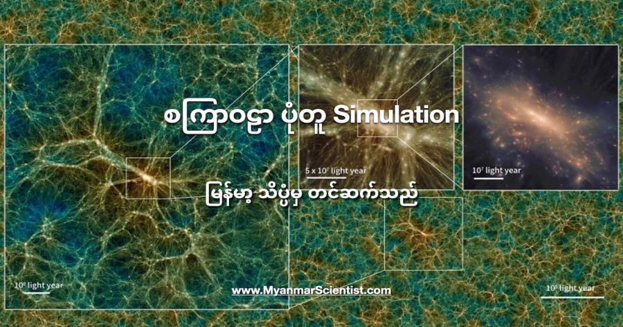

ဂျပန်နိုင်ငံက တက္ကသိုလ် တစ်ခုက ပညာရှင်တွေဟာ ကွန်ပြူတာကို အသုံးပြုပြီး စကြာဝဠာကြီး တစ်ခုလုံးကို ပုံစံတူ ပြုလုပ်ဖန်တီး ခဲ့ကြပါတယ်။ ဒီ ပုံစံတူ simulation ဟာဆိုရင် စကြာဝဠာရဲ့ မြေပုံတခုတင် မကပဲ စကြာဝဠာရဲ့ time machine အချိန်ခရီးသွားစက် တစ်ခုလဲ ဖြစ်ပါတယ်။
အချူး (Uchuu) လို့ အမည်ပေးထားတဲ့ ဒီ စကြာဝဠာရဲ့ မြေပုံမှာတော့ ဂြိုလ်တွေ၊ ဂြိုလ်ရံလတွေရဲ့ ပုံတူတွေ ပါဝင်မှာ မဟုတ်ပါဘူး။ (အချူး ဆိုတာက ဂျပန်လို ပြင်ကအာကာသ လို့ အဓိပ္ပါယ် ရပါတယ်)။ ဒီအစား ဂလက်ဆီတွေလို ကြီးမားတဲ့ ကြယ်အဖွဲ့အစည်းကြီးတွေနဲ့ ဂဆက်ဆီ အစုအဝေးတွေကို အဓိက ပုံတူပြုလုပ်ထာတာ ဖြစ်ပါတယ်။
ဒီမြေပုံမှာ ထူးခြားတာကတော့ အမှောင်ဒြပ် (Dark Matter) တွေ စကြာဝဠာထဲက ဂလက်ဆီ ကြီးတွေအကြားမှာ ပျံ့နှံနေပုံတွေကို အသေးစိတ် ပုံဖော်ထားတာပဲ ဖြစ်ပါတယ်။ ဒီ dark matter အမှောင်ဒြပ်တွေဟာ သူတို့ရဲ့ ဆွဲငင်အားနဲ့ ဂလက်ဆီတွေကို ပုံပျက်မသွားအောင်၊ ပြိုကွဲမသွားအောင် စုစည်းပေး ထားကြတာ ဖြစ်ပါတယ်။
ဒီ ပညာရှင်တွေဟာ စကြာဝဠာကြီး တစ်ခုလုံးရဲ့ နှစ်ပေါင်း ၁၃.၈ ဘီလီယံ (နှစ်သန်း ၁၃,၈၀၀) ကြာမြင့်တဲ့ သမိုင်းကြောင်းကို လေ့လာရာမှာ အထောက်အကူ ပြုနိုင်အောင်လို့ ဒီ စကြာဝဠာ ပုံစံတူ ကို ဖန်တီးခဲ့ကြတာ ဖြစ်ပါတယ်။
ဒီ စကြာဝဠာ ပုံတူကို တည်ဆောက်ရတာ လွယ်ကူလှတဲ့ ကိစ္စ တခုတော့ မဟုတ်ပါဘူး။ ဒီ စကြာဝဠာ ပုံတူဟာ ကုဗတုံး ပုံစံ ရှိပြီး အနားတစ်ဖက်ကို အလင်းနှစ် ၉.၆၃ ဘီလီယံစီ ကျယ်ဝန်းပါတယ်။ ဒီအထဲမှာ စုစုပေါင်း အမှောင်ဒြပ်မှုန် (Dark matter particles) ပေါင်း ၂.၁ ထရီလီယံ (သန်းပေါင်း ၂,၁၀၀,၀၀၀,၀၀၀,၀၀၀) ပါဝင်ပါတယ်။
ဒီ စကြဦဝဠာပုံတူ တည်ဆောက်တာကို ဂျပန်နိုင်ငံ အမျိုးသား နက္ခတ်လေ့လာရေး (National Astronomical Observatory of Japan) က ဆူပါကွန်ပြူတာကြီး ဖြစ်တဲ့ ATERUI II ဆူပါကွန်ပြူတာကို အသုံးပြုပြီး တည်ဆောက်ထားတာ ဖြစ်ပါတယ်။ ဒီလို ဆူပါကွန်ပြူတာကြီး သုံးတာတောင်မှ စုစုပေါင်း ၁ နှစ် အချိန်ယူ တည်ဆောက်ခဲ့ရတာပါ။
ဒီ စကြာဝဠာတုကို တည်ဆောက်ခဲ့တဲ့ ဆူပါကွန်ပြူတာကြီးမှာ CPU processors ပေါင်း အလုံး ၄၀,၂၀၀ တောင် ပါပါတယ်။ ဒီစကြာဝဠာတုဆောက်ဖို့ ဒီ ကွန်ပြူတာ CPU processors အားလုံးကို အသုံးချပြီး တည်ဆောက်တာ ဖြစ်ပါတယ်။ လစဉ် ဒီကွန်ပြူတာကြီးကို အချိန် ၄၈ နာရီ ပေးပြီး တွက်ချက်မှုတွေ ပြုလုပ်တည်ဆောက်ခဲ့တာ ဖြစ်ပါတယ်။
စုစုပေါင်းလိုက်ရင် ဆူပါကွန်ပြူတာရဲ့ အချိန် နာရီပေါင်း သန်း ၂၀ အသုံးချခဲ့ရပါတယ်။ ဒီ တွက်ချက်မှုကနေ 3 Petabytes (3,000 TB) ပမာဏ ရှိတဲ့ အချက်အလက်တွေ ထွက်လာပါတယ်။ ဒါဟာ 12 MP အရွယ်ရှိတဲ့ ဖုန်းကင်မရာက ရိုက်ထားတဲ့ ပုံပေါင်း 894,784,853 နဲ့ ညီမျှပါတယ်။
“Uchuu စကြာဝဠာ ပုံတူဟာ အချိန်ခရီးသွား ယန္တယား (Time Machine) တစ်ခုနဲ့ အလားတူပါတယ်” လို့ ဒီသုတေသနမှာ ပါဝင်တဲ့ စပိန်နိုင်ငံက သုတေသီ Julia F. Ereza က ပြောပါတယ်။ “ဒီအထဲမှာ အချိန်ကို ရှေ့ဆက်သွားလို့လဲ ရတယ်၊ နောက်ပြန်သွားလို့လဲ ရတယ်။ ရပ်ထားလို့လဲ ရတယ်။ ဒီလိုပဲ အာကာသ နေရာ တကွက်လေးကိုလဲ လိုသလို ပုံကြီးချဲ့ ကြည့်လို့ရတယ်။ ဒါမှမဟုတ်လဲ စကြာဝဠာကြိး တခုလုံးကိုလဲအဝေးက Zoom out လုပ်ကြည့်လို့ရတယ်” လို့ သူက ဆက်ပြောပါတယ်။
ဒီမြေပုံကို ဒေါင်းလုပ်လုပ်ချင်တယ် ဆိုရင်တော့ ဒီလင့်ကနေ ဒေါင်းလုပ်နိုင်ပါတယ်။
You tub video ကို အောက်မှာပေးထားပါတယ်။
Reference: Travel through galaxies and the dark matter web in this stunning universe simulation | Live Science
စကြာဝဠာ တခုလုံးကို ကွန်ပြူတာနဲ့ ပုံစံတူ ဖန်တီးထားတဲ့ Simulation

September 16, 2021
Other Posts
- ကွမ်တမ်မိတ်ဆက် – ကွာဇီအမှုန်ဆိုတာ ဘာလဲ
- ကြယ်ကြီး ပေါက်ကွဲပြီး ကျန်ခဲ့တဲ့ တိမ်တိုက်ကြီး
- ဥက္ကာပျံကို ဝင်ဆောင့်မယ့် နာဆာရဲ့ အကြံ
- အိုင်းစတိုင်း ဟောကိန်းထုတ်ခဲ့တဲ့ ဆွဲငင်အားလှိုင်း (Gravitational Wave) ဆိုတာဘာလဲ
- မိုက်ကရိုဝေ့ (Microwave) ဆိုတာဘာလဲ
- တိရစ္ဆာန်တွေ အရောင် မြင်နိုင်သလား
- ရုရှားတို့ရဲ့ ပြဿနာပေါင်း သောင်းခြောက်ထောင်နဲ့ လေယာဉ်တင် သင်္ဘောကြီး
- လထွက်စမှာ ဘာလို့ အရွယ်ပိုကြီးရတာလဲ
- လွန်ခဲ့သော နှစ် ၅ သိန်းက ပျောက်ဆုံးသွားခဲ့သော လူသားမျိုးနွယ်စု၏ အထောက်အထား ရှာတွေ့
- အင်္ဂါဂြိုဟ် ပေါ်က တံခါးပေါက်ကြီး